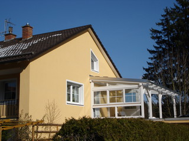
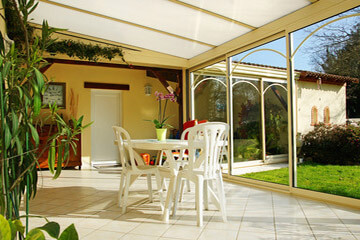
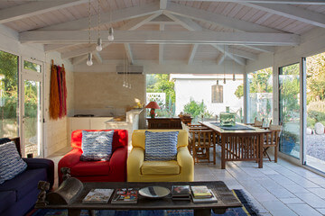
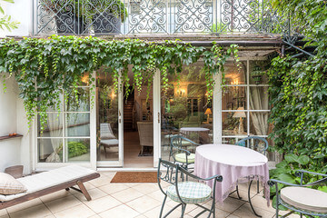

Votre véranda s’intègrera parfaitement dans son
environnement
Selon son esthétique, une véranda peut souligner le caractère d’une maison, ou même conférer une belle
originalité à une habitation relativement banale. Concepteurs de veranda à fontenay sous bois, nous attachons
la plus grande importance à la beauté de nos vérandas. Toujours, nous aurons à cœur d’étudier avec vous un
projet qui valorise votre façade et s’intègre harmonieusement dans votre environnement, en tenant compte de la
configuration de votre jardin et du style de votre maison.

Une conception optimisée de votre véranda à
Fontenay-sous-Bois
Votre véranda sera unique et vous ressemblera vraiment. Construite sur mesure
pour vous, elle sera optimisée en fonction de vos besoins et de vos désirs. L’optimisation de la luminosité et
l’isolation thermique sont par exemple des paramètres fondamentaux, que nous envisagerons avec vous dès
l’étape de la conception. Notre but est de vous livrer une véranda toujours agréable à vivre, quelles que
soient la luminosité et les conditions météorologiques extérieures.
Une véranda pérenne et sans souci

Notre longue expérience de construction de veranda fontenay sous bois et dans
le 94 vous garantit une véranda robuste et pérenne. A cet effet, notre choix s’est porté sur l’aluminium,
matériau particulièrement résistant et demandant très peu d’entretien. La pose de votre véranda sera réalisée
par nos experts dans les règles de l’art et soignée à chaque étape, afin que votre pièce en plus soit
confortable, sécurisée, et vous donne toute satisfaction.
Veranda Fontenay sous Bois

Nous savons combien le projet d’une véranda est important pour vous et
quelles sont vos hésitations au moment de passer à sa réalisation. Notre ambition est d’être à la hauteur de
vos rêves. Pour cela nous sommes toujours à votre écoute, afin de comprendre vos besoins et vos souhaits,
aussi bien sur le plan esthétique que pratique. A chaque étape, nous dialoguons avec vous, afin de construire
ensemble votre véranda unique, répondant au plus près à vos désirs.
Nous vous accompagnons de A à Z

veranda fontenay sous bois est une entreprise ayant pour vocation la
conception, la construction et la réparation de vérandas. A chaque étape, du projet à la livraison de votre
véranda, nous vous accompagnons et mettons notre expertise à votre service. En particulier, nous réalisons
nous-mêmes la pose des nos vérandas, sans faire appel à une sous-traitance. Du technicien conseil au poseur,
nos professionnels se relaient jusqu’à l’aboutissement final de votre projet. Par la suite, nous pouvons
entretenir votre véranda ou lui apporter toute modification que vous souhaiteriez.
De A à Z, nous sommes votre allié au long cours.